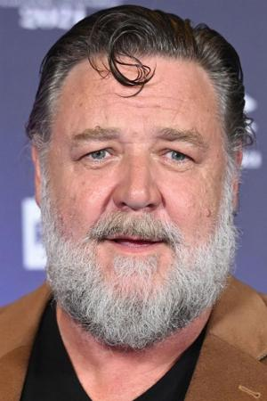
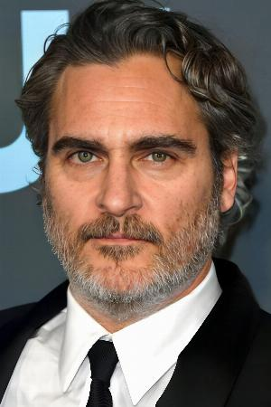

Gladiator
InicioPelícula épica del año 2000 dirigida por Ridley Scott y protagonizada por Russell Crowe, Joaquin Phoenix y Connie Nielsen.
Crowe interpreta a Máximo Décimo Meridio, un leal general hispano del ejército del Imperio romano que es traicionado por Cómodo, el ambicioso hijo del emperador Marco Aurelio, quien ha asesinado a su padre y se ha hecho con el trono Forzado a convertirse en esclavo, Máximo triunfa como gladiador mientras anhela vengar la muerte de su familia y la del emperador.
Personaje principal
| Reparto | Descripcion |
|---|---|
Russell Crowe  |
Nacionalidad: Nueva Zelanda Nacimiento: 7 de abril de 1964 Altura: 1,82 m. El 7 de abril de 2003 se casó con la también actriz y cantante australiana Danielle Spencer. El 21 de diciembre de 2003 nació su primer hijo, Charles Spencer Crowe, y el 7 de julio de 2006 nació el segundo, Tennyson Spencer Crowe. El 15 de octubre de 2012, Danielle Spencer y Crowe anunciaron su divorcio de mutuo acuerdo tras nueve años de matrimonio. |
Joaquin Phoenix  |
Nacionalidad: Estados Unidos Nacimiento: 28 de octubre de 1974, Puerto Rico (49 años) Altura: 1,73 m. Joaquin Rafael Bottom nació el 28 de octubre de 1974 en Río Piedras distrito de San Juan, Puerto Rico. Es el tercero de cinco hijos. Desde 2016 mantiene una relación con la actriz estadounidense Rooney Mara, que comparte su compromiso ético al veganismo. En julio de 2019, se confirmó que están comprometidos. En mayo de 2020 se confirmó que la pareja esperaba su primer hijo.4 En septiembre de 2020 se anunció el nacimiento de su hijo, River, nombrado en honor a su fallecido hermano River Phoenix. |